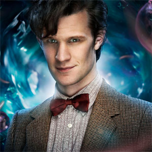

|
|||||||||||||||||||||
|
The Eleventh DoctorPortrayed by: Matt Smith The Eleventh Doctor is the eleventh incarnation of the protagonist of the BBC television science fiction series Doctor Who. He is played by Matt Smith,[9] who appears in three series as well as seven specials, over an almost four-year period. As with previous incarnations of the Doctor, the character has also appeared in other Doctor Who multimedia. Within the series' narrative, the Doctor is a centuries-old alien, a Time Lord from the planet Gallifrey, who travels in time and space in his TARDIS, frequently with companions. When the Doctor is critically injured, he can regenerate his body but in doing so gains a new physical appearance and with it, a distinct new personality. Smith portrays the eleventh such incarnation, a quick-tempered but compassionate man whose youthful appearance is at odds with his more discerning and world-weary temperament. His main companions included feisty Scot Amy Pond (Karen Gillan), her husband Rory Williams (Arthur Darvill) and the mysterious Clara Oswald (Jenna-Louise Coleman). He also frequently appeared alongside River Song (Alex Kingston), a fellow time traveller with whom he shared a romantic storyline, and was the last Doctor to appear alongside the long-serving companion Sarah Jane Smith (Elisabeth Sladen) prior to the actress' death, featuring in two episodes of the spin-off programme The Sarah Jane Adventures. After the end of the revived series' seventh season in May 2013, Smith announced he was leaving the show, but would portray the character in two more episodes. He is slated to appear in The Day of the Doctor, the show's 50th anniversary special, on 23 November 2013, and the following month's Christmas special, in which Peter Capaldi will take over the role as the Twelfth Doctor.[10][11] |
||||||||||||||||||||